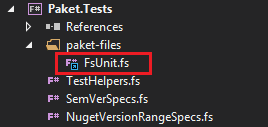
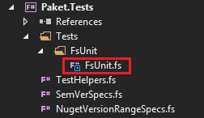
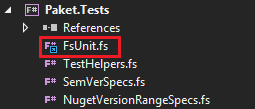

GitHub dependencies
Paket allows you to automatically manage the linking of files from github.com or gist.github.com into your projects.
If you have Git installed then Paket also allows you to reference files from other git repositories.
Referencing a single file
You can reference a single file from github.com simply
by specifying the source repository and the file name in the
paket.dependencies file:
1:
|
|
If you run the paket update command, it will download the
file to a subdirectory in paket-files and also add a new section to your
paket.lock file:
1: 2: 3: |
|
As you can see the file is pinned to a concrete commit. This allows you to
reliably use the same file version in succeeding builds until you elect to
perform a paket update command at a time of your
choosing.
By default the master branch is used to determine the commit to reference, you
can specify the desired branch or commit in the
paket.dependencies file:
1: 2: |
|
If you want to reference the file in one of your project files then add an entry
to the project's paket.references file:
1:
|
|
and run paket install command. This will reference the
linked file directly into your project and by default, be visible under
paket-files directory in project.

You can specify custom directory for the file:
1:
|
|

Or if you use . for the directory, the file will be placed under the root of the project:
1:
|
|

Referencing a GitHub repository
You can also reference a complete github.com repository
by specifying the repository id in the paket.dependencies
file:
1: 2: 3: 4: 5: 6: 7: 8: |
|
This will download the given repository and put it into your paket-files
directory. In this case we download the source of
FSharp.Formatting.
Recognizing build action
Paket will recognize build action for referenced file based on the project type.
As example, for a *.csproj project file, it will use Compile build action if
you reference *.cs file and Content build action if you reference file with
any other extension.
Remote dependencies
If the remote file needs further dependencies then you can just put a
paket.dependencies file into the same GitHub
repository directory. Let's look at a sample:

And we reference this in our own
paket.dependencies file:
1:
|
|
This generates the following paket.lock file:
1: 2: 3: 4: 5: 6: 7: 8: 9: 10: 11: 12: 13: 14: |
|
As you can see Paket also resolved the Octokit dependency.
Referencing a private GitHub repository
To reference a private GitHub repository the syntax is identical to above and
supports the same branch and file definitions the only extra item to add is an
identifier which defines which credential key to use (see paket
config).
1:
|
|
Using a GitHub authentication key from environment variable
Paket will use a GitHub token from a enviroment variable
PAKET_GITHUB_API_TOKEN. This will allow you to access private repositories and to
work around the GitHub API limit on public repositories.
Gist
Gist works the same way. You can fetch single files or multi-file Gists as well:
1: 2: |
|
If you run the paket update command, it will add a new
section to your paket.lock file:
1: 2: 3: 4: 5: |
|